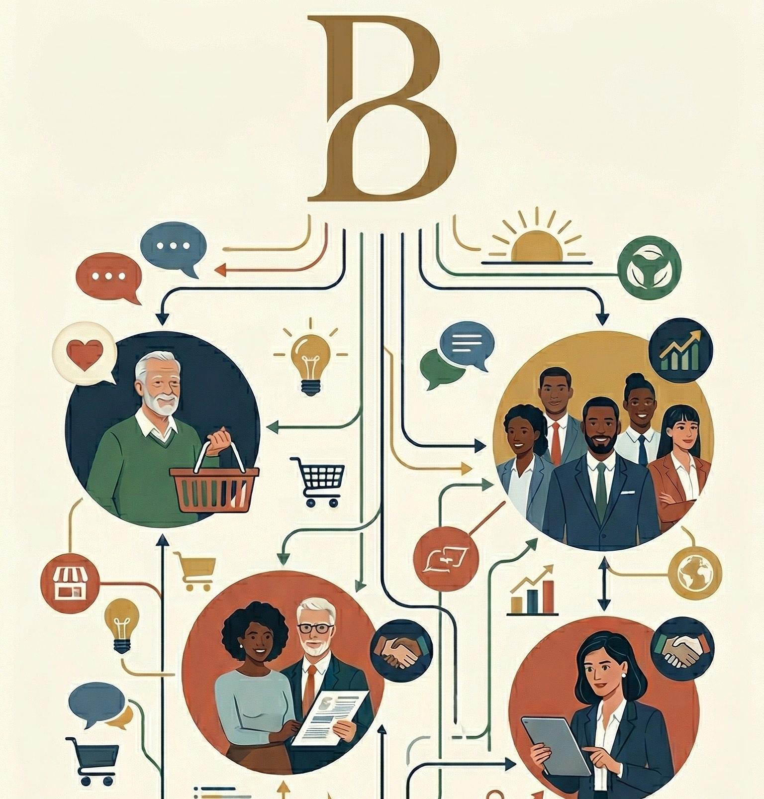
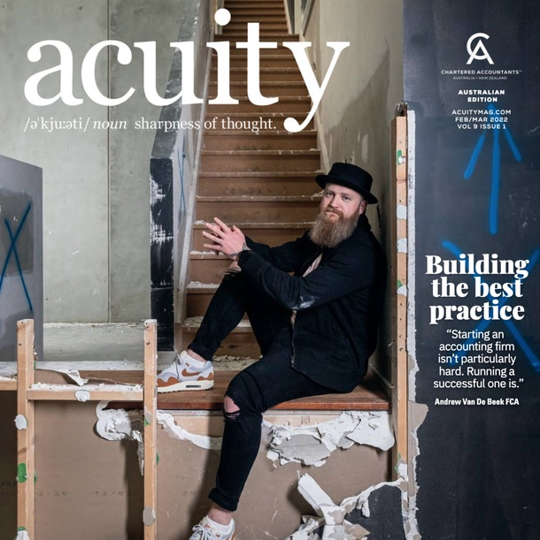
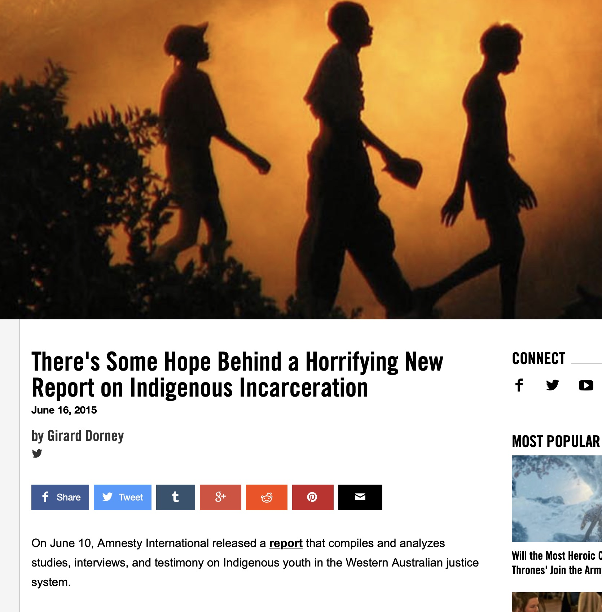
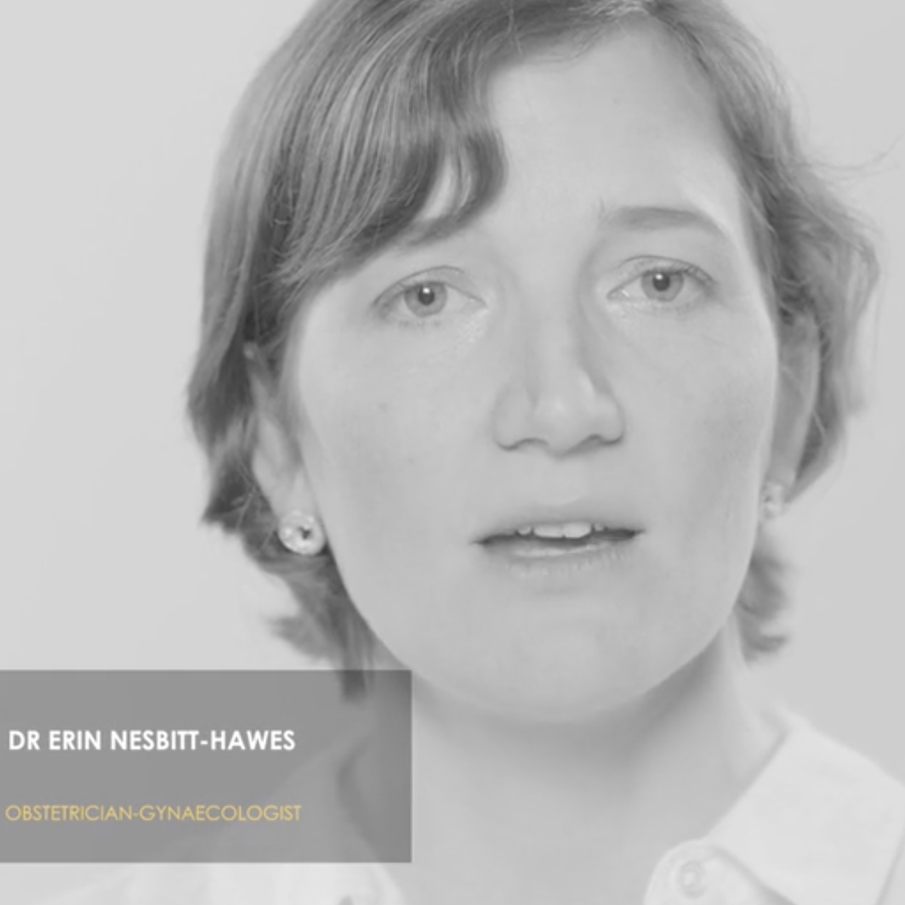

You're different.* Before the rise of LLMs, the greatest struggle for organisations was to sound different from their competitors. Now the problem is worse. I can help.
Does your audience know?
You've reached Girard Dorney's vibe-coded website and portfolio. I'm a content strategist, senior editor, and writer with over 14 years of experience delivering multi-channel communications for leading brands, executives, and publications.

Editorial Leadership
Oversaw a team of writers and designers delivering a monthly magazine, website, and e-newsletter. We drove a huge YoY increase of website traffic and were key to successfully reaching client AHRI's strategic goals.
Read Breakdown →
Brand Communications
Steered messaging for a variety of clients, from regulated financial companies during the Royal Banking Commission to a growing EAP business looking to make its mark.
Read Breakdown →
Commercial Editor
Oversaw the commercial content of publications with large membership audiences, including Chartered Accountants’ Acuity and Engineers Australia’s Create, ensuring brand consistency and coordinating freelance teams.
Read Breakdown →
Journalism
Authored over 100 articles, including for Vice Australia, Reveille Magazine, and Country Update on complex topics such as veteran mental health and Indigenous incarceration under tight deadlines.
Read Breakdown →
Executive Communications
Worked with CEOs and executive teams to provide narrative advice, draft keynote speeches, and manage external messaging.
Read Breakdown →
Multimedia Campaigns
Designed and delivered communication campaigns across multiple formats, including video editing, scriptwriting, podcasts, live blogs, and eBooks.
Read Breakdown →